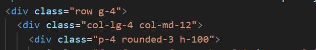

Twist Your Noodles
2025
Navigation Structure
- The Navbar uses standard Bootstrap classes.
- Key Links (Section Anchors):
#home,#about,#lab,#products.- External link to
contacts.htmland Instagram.

The Lab: The Noodle Journey
This section details the slow-fashion process using a clear 3-step grid layout.
Code Implementation:
- Icons: Using Font Awesome for visual clarity.

- Icons: Using Font Awesome for visual clarity.
Product Carousel
- Implementation: Using the Bootstrap
Carouselcomponent. - Functionality: Allows interactive display of 5 key
items (
item1.jpgtoitem5.jpg).